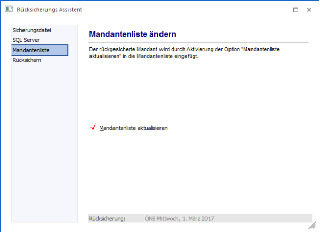
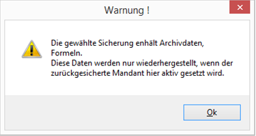
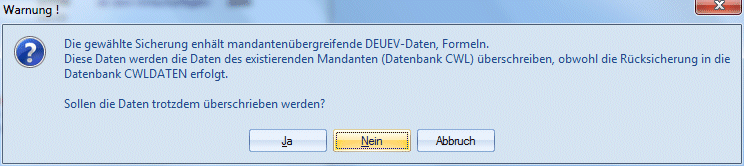

Im Schritt 5, der nur bei einer Mandantensicherung bearbeitet werden kann, kann entschieden werden, ob die Mandantenliste (Datenstandsverbindungen) aktualisiert werden soll.

Wird die Option
Ø Mandantenliste aktualisieren
aktiviert, wird die Datenbankverbindung zu dem rückzusichernden Mandanten automatisch erstellt. Diese Option hat nur dann eine Auswirkung, wenn der Mandant auf einen anderen Ort (anderen Server oder andere Datenbank) rückgesichert wird, als die Datensicherung durchgeführt wurde.
Bleibt die Checkbox inaktiv, dann wird zwar eine Rücksicherung durchgeführt, man muss sich aber selbst darum kümmern, dass die Datenbankverbindung erstellt wird (sofern sich durch die Rücksicherung alternative Einstellungen wie anderer Server oder andere Datenbank ergeben haben).
Existieren in der Mandantensicherung auch mandantenunabhängige Daten (LOHN-Formeln, DEÜV-Daten), muss die Checkbox "Mandantenliste aktualisieren" angehakt sein, damit die mandantenunabhängigen Dateien, welche die Formeln beinhalten, wiederhergestellt werden. Ist die Checkbox nicht angehakt, erfolgt eine entsprechende Meldung.

Wird ein Mandant (LOHN Formeln wurden mitgesichert), der bereits in den Datenbankverbindungen enthalten ist, in eine andere Datenbank zurückgesichert, dann kommt eine Abfrage, ob man die mandantenunabhängigen Daten wiederherstellen möchte.

Wird die Abfrage mit Ja bestätigt, werden die mandantenunabhängigen Daten überschrieben.
Durch Anklicken des "Vor"-Buttons gelangt man in das nächste Fenster, durch Anklicken des "Zurück"-Buttons können die vorgenommen Einstellungen nochmals editiert werden.
Hinweis
Durch Drücken des "Ok"-Buttons oder der Taste F5 kann bereits an dieser Stelle die Rücksicherung gestartet werden.